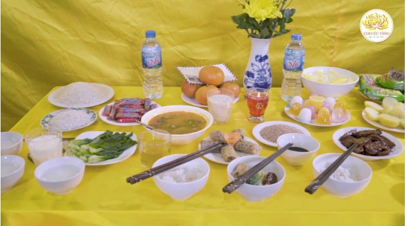
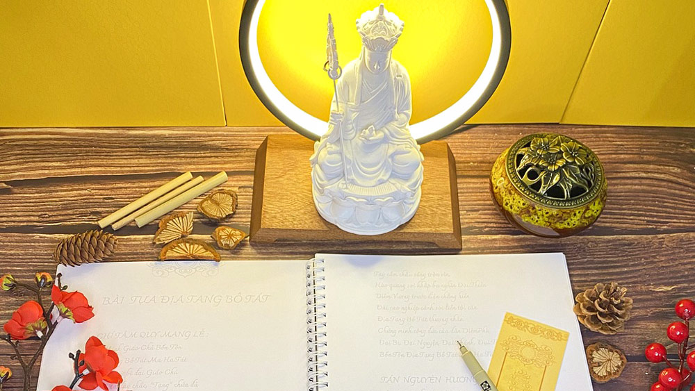
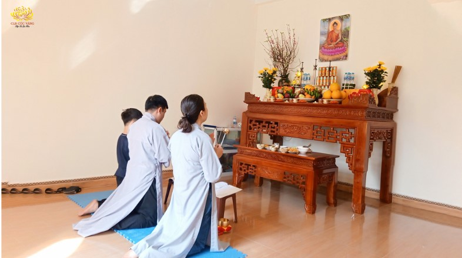

Tết Canh Tý 2020 - Cúng "giao thừa" và "ba ngày Tết" thế nào cho đúng?
Cúng lễ giao thừa và cúng lễ ba ngày Tết là phong tục, nếu mọi sự đầu tiên mà tốt lành thì mọi sự về sau mình cũng mong tốt lành. Vậy chúng ta nên cúng khấn như thế nào để mọi sự khởi đầu tốt?
Chi tiếtTu theo đạo Phật có ảnh hưởng đến phong tục, tín ngưỡng của dân tộc?
Đức Phật Thích Ca là người sáng lập ra đạo Phật, nhưng Đức Phật không bao giờ tự coi Ngài là giáo chủ. Đức Phật cũng không ràng buộc ai phải theo Ngài
Chi tiết2 cách tư duy theo Phật Pháp giúp bạn quên đi người yêu cũ?
Ngồi trầm tĩnh tư duy, quán tưởng về người yêu cũ: các hành động của bạn kia với người yêu như đi bên nhau, quan tâm đưa đón, cưới nhau, sinh con, con ốm bạn làm gì, hết tiền,
Chi tiếtLời chúc mừng năm mới ý nghĩa trong dịp Tết Canh Tý 2020
Chúc cho cả nhà đầu xuân năm mới cho đến cả năm đều tạo được nhiều phúc báu để cho gia đình được hạnh phúc, có nhiều sức khỏe, mọi việc được an ổn, tốt đẹp
Chi tiếtCúng cơm ngày tết như thế nào để được lợi ích nhất?
Trong kinh Đức Phật dạy: Nếu ai nhận được đồ thí, sẽ hộ trì cho người bố thí.
Chi tiếtLàm đẹp là nhu cầu tất yếu của phụ nữ. Nhan sắc đẹp khiến phụ nữ có nhiều cơ hội trong cuộc sống cũng như trong công việc, tạo thiện cảm được nhiều người yêu mến...
Chi tiếtLàm thế nào để tìm người bạn đạo cho mình?
Người bạn đạo là người cùng lý tưởng với mình, cùng mong muốn sửa đổi tâm tính theo giáo lý đạo Phật,...
Chi tiếtLấy người mình yêu hay chọn chứng tỏ năng lực?
So với thời phong kiến có tư tưởng “cha mẹ đặt đâu con ngồi đó”, thời hiện đại ngày nay, các bạn trẻ được bố mẹ tôn trọng quyền lựa chọn người bạn đời của mình.
Chi tiếtKhi nội bộ gia đình mâu thuẫn nên làm thế nào?
Chồng và mẹ chồng con đang có xảy ra va chạm, em trai và em dâu con cũng có va chạm (đánh nhau). Con ko biết do nhân gì dẫn đến như vậy?
Chi tiếtHoàn cảnh nào nên hàn gắn quan hệ vợ chồng?
Trong chuyện vợ chồng sẽ không tránh khỏi những việc xảy ra ngoài ý muốn, ví dụ như chồng ngoại tình và có con riêng bên ngoài.
Chi tiếtBiết trước sự việc qua giấc mơ là do đâu?
Có những giấc mơ, khi ngủ dậy thì xảy ra đúng như sự thật. Vậy những giấc mơ này do đâu mà có? Có nên mong cầu những giấc mơ để biết trước sự việc.
Chi tiếtBài học rút ra từ sai lầm của người khác
Chúng ta luôn có thể học được rất nhiều từ sai lầm của bản thân mình, tuy nhiên vẫn có những bài học...
Chi tiếtLên khóa lễ đúng giờ có lợi ích gì?
Để môt tổ chức, đoàn thể hay một cá nhân làm việc có hiệu quả thì đều cần có thời gian biểu để thực...
Chi tiếtLà người đệ tử Phật, có bao giờ quý Phật tử thắc mắc Phật ở đâu trong pháp giới này?...
Chi tiếtLàm sao để giữ được cảm giác yêu lâu dài?
Tại sao có những cặp đôi yêu nhau rất lâu, vượt qua bao trắc trở, khó khăn, thử thách để đến được với nhau nhưng chỉ một thời gian ngắn là đường ai nấy đi?
Chi tiếtThế nào là “Tự quy y Tăng nguyện cho chúng sinh thống lý đại chúng nhất thiết không ngại”?
Tự quy y Tăng là tự mình quay về nương tựa nơi tự tính thanh tịnh. Nguyện cho chúng sinh thống lý đại chúng nhất thiết không ngại là nguyện cho tất cả chúng sinh đều quay về nơi tự tính thanh tịnh, không làm chướng ngại nhau.
Chi tiết
Ý nghĩa của việc chép kinh là gì?
Kinh Phật là lời dạy vô cùng quý báu của Đức Phật, vì nếu ai làm theo lời Phật dạy sẽ bớt khổ và hết khổ. Cho nên, việc lưu truyền kinh Phật là trách nhiệm của đệ tử Phật và nếu ai phát tán kinh Phật cho số đông thì có công đức vô cùng lớn.
Chi tiếtTu học Phật pháp có nên sợ nghiệp quá khứ không?
Con có một người bạn khi tu tập lại có tâm lý sợ tội, hoang mang... không biết trước khi mình chưa tu thì có lỡ bất kính với Tam Bảo không; có phỉ báng Tam Bảo không
Chi tiết
Tại sao biết Phật không thọ thực mà Phật tử vẫn dâng lễ cúng?
Bất cứ thời gian nào, chúng ta khởi tâm cúng Phật thì chúng ta đều có thể dâng lễ cúng Phật được. Việc làm này đều sinh ra phúc báo cho chúng ta
Chi tiếtHiện báo - hậu báo - sinh báo trong đạo Phật là gì?
Quả báo gồm có 3 thời điểm: Hiện báo, hậu báo và sinh báo. Hiện báo: Là làm việc thiện hoặc ác liền có quả báo ngay trong hiện tại kiếp này...
Chi tiếtHãy là những người giữ giới để trở thành bạn tốt của nhau
Người Phật tử tại gia giữ giới sẽ mang lại hạnh phúc và an vui cho chính họ trong kiếp này và nhiều...
Chi tiếtCó nên đối xử tốt với người đã từng ác với mình?
Cuộc sống này luôn luôn tồn tại những điều trái ngược nhau: Có niềm vui thì sẽ có nỗi khổ, có nụ cười thì cũng có nước mắt, có người yêu thương mình thì cũng có người ác hại mình
Chi tiếtPhong thủy trong đời sống và quan điểm Phật giáo?
Thực tế thì phong thủy cũng có ảnh hưởng tới cuộc sống của chúng ta nhưng không phải là chân lý tuyệt đối để có thể hoàn toàn phụ thuộc vào.
Chi tiếtGiải đáp những thắc mắc sau khi người thân mất
Chuyện sinh tử là điều mà con người không thể tránh khỏi trên thế gian này....
Chi tiết"Hàn long mạch" như thế nào cho đúng?
Trong dân gian, phần long mạch là một tướng của đất. Để hiểu rõ hơn về việc hàn long mạch, kính mời quý Phật tử tham khảo bài viết dưới đây.
Chi tiết"Vòng tay chỉ đỏ may mắn" có thật sự đem lại may mắn?
Thời gian gần đây, có một loại vòng tay tên là Chỉ đỏ kim vàng hay còn gọi là Vòng tay chỉ đỏ may mắn đã được các Thầy trì chú đang gây chú ý về mặt dư luận....
Chi tiếtSau khi xây nhà, gặp chuyện không hay có phải do chuyển bàn thờ sai?
Nhiều người đang phân vân không biết nên thay đổi bàn thờ như thế nào sau khi xây hoặc sửa chữa nhà vì ngay sau khi hoàn thành nhà mới,...
Chi tiết“Cái tôi” cũng bị cho là nguyên nhân gây ra khổ đau của con người, là lý do tạo nên những chướng ngại trong con đường tu học Phật Pháp.
Chi tiếtThường xuyên mất tài sản thì phải làm sao?
Có trường hợp cứ hễ lên chùa là gặp phải những chuyện không hay như bị thất thoát tài sản, gia đình làm ăn thất bát, con cái hư hỏng...
Chi tiết
Đừng nghe thầy tà mà về nhà dẹp bàn thờ tổ tiên!
Tín ngưỡng thờ cúng tổ tiên là một nét đẹp văn hóa lâu đời của dân tộc Việt nam ta, nó biểu hiện lòng hiếu thảo, uống nước nhớ nguồn, tưởng nhớ sâu sắc tới công ơn sinh thành của cha mẹ và tổ tiên.
Chi tiết